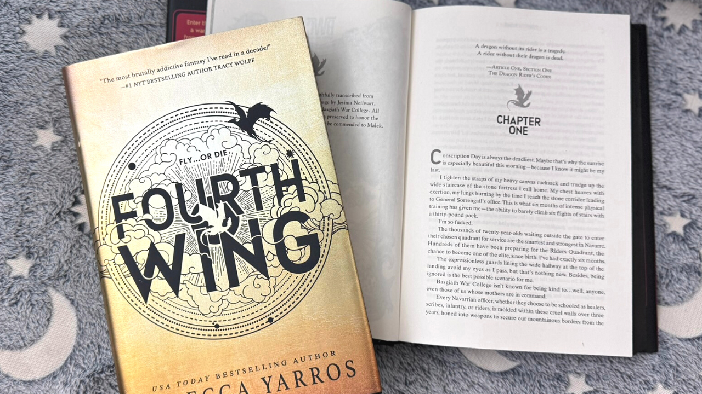

What's up, girlies!!!
Today we're talking about one of my favorite books (cuz book girlies know
there's never one single favorite), which is "Fourth Wing" by Rebecca
Yarros.

This book is a fantasy novel that follows the story of Violet Sorrengail,
a young woman who dreams of becoming a dragon rider. The story is set in a
world where dragon riders are the elite warriors of the kingdom, and
Violet must navigate the dangerous politics and challenges of the
dragon-riding world to achieve her dreams.
The book is filled with action, adventure, and romance, and it explores
themes of friendship, loyalty, and self-discovery. The characters are
well-developed and the world-building is immersive, making it a
captivating read for fans of fantasy novels.
Overall, "Fourth Wing" is a thrilling and engaging book that is sure to
captivate readers who enjoy fantasy and adventure stories. If you're
looking for a new book to dive into, I highly recommend giving "Fourth
Wing" a try!
It's the first book in the "Empyrean" series, and it has received positive
reviews for its engaging plot and well-developed characters. If you're a
fan of fantasy novels with strong female protagonists, "Fourth Wing" is
definitely worth checking out!
The series is expected to continue with more books in the future, so if
you enjoy "Fourth Wing," you can look forward to more adventures in the
world of Empyrean!